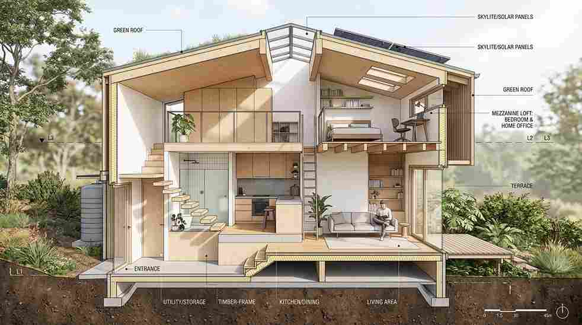

Desain rumah minimalis modern tahun 2026 mengedepankan garis bersih, bukaan cahaya alami, dan denah open plan yang membuat lahan terbatas terasa lebih luas dan fungsional untuk keluarga urban.
Fasad flat roof, material ekspos seperti beton dan kayu, palet warna netral, serta pencahayaan alami lewat jendela besar dan void menjadi ciri yang paling konsisten muncul pada rumah-rumah baru tahun ini.
Semuanya bisa disesuaikan lebih jauh lewat konsultasi dengan arsitek berdasarkan bentuk lahan riil.
Apa Ciri Khas Desain Rumah Minimalis Modern 2026?
Ciri utamanya adalah bentuk geometris sederhana, atap datar atau miring landai, serta dinding polos tanpa ornamen berlebihan. Rumah minimalis modern mengutamakan fungsi ruang di atas dekorasi.
Tren ini berkembang dari gaya minimalis klasik dengan tambahan sentuhan teknologi rumah pintar dan material ramah lingkungan. Elemen kaca besar, kanopi baja ringan, dan taman vertikal kini jadi pelengkap yang umum ditemui pada rumah-rumah baru di kawasan Jabodetabek.
Beberapa elemen yang konsisten muncul pada desain 2026:
- Garis horizontal dan vertikal tegas tanpa lengkungan dekoratif.
- Kombinasi dua hingga tiga material utama saja agar fasad tidak ramai.
- Carport terintegrasi dengan taman depan, bukan sekadar area parkir kosong.
Bagaimana Memilih Denah yang Hemat Lahan tapi Tetap Terasa Luas?
Denah open plan adalah kunci membuat lahan sempit terasa lega, dengan menyatukan ruang tamu, makan, dan dapur tanpa sekat masif.
Untuk lahan di bawah 90 meter persegi, disarankan meminimalkan koridor dan sekat permanen. Void di area tangga atau ruang keluarga membantu sirkulasi udara sekaligus menghadirkan efek visual lebih tinggi dan lapang.
Kamar tidur biasanya ditempatkan di lantai dua agar area publik di lantai dasar tetap terbuka. Secara umum, lahan mulai dari 60-72 meter persegi sudah cukup untuk rumah minimalis modern dua lantai dengan dua hingga tiga kamar tidur, tergantung bentuk dan orientasi lahan.

Berikut pola denah yang umum diterapkan pada rumah minimalis modern hemat lahan:
- Lantai dasar: carport, ruang tamu menyatu ruang makan, dapur, kamar mandi tamu.
- Lantai dua: dua hingga tiga kamar tidur, ruang keluarga kecil, void di atas ruang tamu.
- Taman belakang atau samping sebagai area resapan air sekaligus sirkulasi udara silang.
Sebelum menentukan denah final, ada baiknya berdiskusi dengan jasa arsitek profesional agar orientasi matahari, arah angin, dan bentuk lahan benar-benar dipertimbangkan sejak tahap sketsa awal.
Proses desain awal hingga gambar kerja sendiri dapat bervariasi lamanya, umumnya memakan waktu beberapa minggu tergantung kompleksitas proyek.
Material dan Warna Apa yang Cocok untuk Fasad Rumah Minimalis Modern?
Kombinasi beton ekspos, kayu, dan kaca adalah pasangan material paling banyak dipakai karena tahan lama dan mudah dirawat.
Warna netral seperti putih, abu tua, dan krem tetap menjadi pilihan aman karena fleksibel dipadukan dengan berbagai aksen. Sentuhan kayu pada bagian kanopi atau pagar memberi kesan hangat di tengah dominasi warna dingin beton dan kaca.
Meski identik dengan gaya minimalis, pemilihan atap datar tetap aman digunakan untuk iklim tropis asalkan sistem waterproofing dan kemiringan drainase dirancang dengan benar oleh tim konstruksi berpengalaman.
Tabel berikut merangkum kombinasi material fasad yang populer beserta karakteristiknya:
| Elemen Fasad | Material Populer | Karakteristik | Estimasi Perawatan |
|---|---|---|---|
| Dinding utama | Cat eksterior weathershield, beton ekspos | Tahan cuaca, minim retak rambut | Dicat ulang 5-7 tahun |
| Kanopi & pagar | Kayu solid, besi hollow finishing kayu | Hangat secara visual, kokoh | Vernis ulang 2-3 tahun |
| Bukaan jendela | Kaca tempered, kusen aluminium | Hemat energi, minim korosi | Perawatan ringan berkala |
| Lantai teras | Homogeneous tile, batu alam | Tidak licin, awet | Dipoles berkala |
15 Inspirasi Konsep yang Bisa Diterapkan
Berikut ragam konsep yang bisa disesuaikan dengan luas lahan dan anggaran Anda, dan umumnya lebih hemat biaya dibanding gaya klasik karena ornamennya lebih sedikit.
Meski begitu, biaya akhir tetap bergantung pada pilihan material dan tingkat kerumitan denah:
- Fasad flat roof dengan garis horizontal dominan.
- Rumah tropis modern dengan bukaan lebar dan void tengah.
- Konsep industrial dengan bata ekspos dan besi hollow.
- Fasad monokrom hitam-putih dengan aksen kayu.
- Rumah satu lantai dengan taman kering minimalis.
- Split level untuk lahan berkontur.
- Rumah hook dengan bukaan dua sisi untuk cross ventilation.
- Fasad dengan secondary skin GRC berpola geometris.
- Konsep courtyard kecil di tengah rumah.
- Rooftop garden sebagai ruang keluarga tambahan.
- Kombinasi kayu dan beton dengan carport terbuka.
- Rumah minimalis Jepang dengan nuansa kayu terang.
- Fasad kaca besar untuk rumah menghadap taman kota.
- Rumah mungil tipe 36 dengan mezzanine.
- Rumah dua lantai dengan balkon privat di kamar utama.
Setiap konsep di atas sebaiknya disesuaikan lagi dengan estimasi biaya riil di lapangan.
Anda bisa mempelajari lebih lanjut cara menghitungnya pada panduan biaya bangun rumah per m2 sebelum menentukan spesifikasi final bersama tim konstruksi.
Kesalahan Umum yang Perlu Dihindari
Kesalahan paling sering adalah memaksakan desain tren tanpa mempertimbangkan arah matahari dan sirkulasi udara, sehingga rumah terasa panas meski terlihat estetik di foto.
Kesalahan lain yang kerap terjadi antara lain menggunakan terlalu banyak jenis material pada satu fasad sehingga tampilan jadi ramai.
Selain itu, mengabaikan drainase air hujan pada desain atap datar, serta tidak menyisakan ruang untuk utilitas seperti tangki air dan panel listrik juga sering terjadi.
Pada akhirnya, desain rumah minimalis modern yang baik menitikberatkan fungsi, pencahayaan alami, dan efisiensi lahan, bukan sekadar tampilan estetik semata.
Pastikan denah dan pemilihan material sudah dikonsultasikan dengan jasa arsitek profesional, dan lihat juga kumpulan portofolio proyek arsitektur kami sebagai referensi tambahan sebelum memutuskan konsep rumah Anda.
Jika sudah punya gambaran desain, langkah berikutnya adalah menghitung anggaran lewat panduan biaya bangun rumah per m2 atau langsung mendiskusikan pengerjaan bersama jasa renovasi rumah Jakarta terpercaya.